- You cannot invest in all of them.
- Investment 1 must be chosen if investment 3 is chosen.
- Investment 5 can be chosen only if investment 2 is also chosen.
- You must choose either both investments 1 and 6 or neither.
- You must choose either at least one of the investments 1,2,3, and/or at least two investments from 2,5,6,7.
Model this as a 0-1 integer programming feasibility problem.
Solution:
The model is
For the final constraint for condition (e), we need
or equivalently, we need
The corresponding disjunctive cut is
from taking the larger coefficient for each xi. We can confirm the constraint is equivalent to the required logical condition by examining cases.
An alternative approach for constraint (e): this is the more standard approach, and doesn’t need to exploit the disjunctive cut structure. We introduce a new binary variable ze and impose two constraints:
- If ze = 1 then we must choose at least one of investments 1,2,3. There is no restriction imposed on investments 2,5,6,7.
- If ze = 0 then we must choose at least two of investments 2,5,6,7. There is no restriction imposed on investments 1,2,3.
- (15 points) We have a collection of 2k - 1 objects, where k is a positive integer.
Let
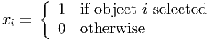 Assume that at most one item can be selected from each subset of size k. Show that the constraint
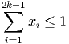 has Chvatal rank at most one.
- (10 points) In a particular node packing problem on a graph G = (V,E), we have a
clique C of size 17. The initial LP relaxation only includes constraints for the
edges,
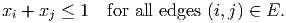 Show that the clique constraint
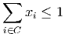 has Chvatal rank at most 4.
Solution:
- For each subset K with |K| = k, we have the valid constraint
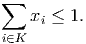 Adding the inequalities, we get
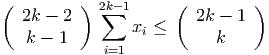 where the term on the right hand side is the number of subsets of cardinality k and the term on the left is the number containing any particular xi. Dividing by the term on the left and rounding, we get
as required. Thus, the given inequality has Chvatal rank at most 1.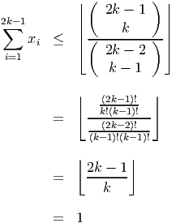 An alternative approach, which uses only a linear number of subsets:
Consider the following 2k - 1 subsets of the items, each of cardinality k:
Each item appears in exactly k of these subsets. The sum of the given valid inequalities for these subsets can be written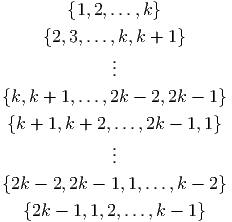 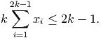 Dividing by k and rounding down gives the valid inequality
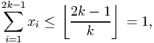 so the required inequality indeed has Chvatal rank no larger than one.
- From part 2a, we get:
- clique inequalities for subcliques of size 3 have Chvatal rank at most 1.
- clique inequalities for subcliques of size 5 have Chvatal rank at most 2.
- clique inequalities for subcliques of size 9 have Chvatal rank at most 3.
- clique inequality for the clique of size 17 has Chvatal rank at most 4.
has an LP relaxation which has optimal form
with optimal basic feasible solution x = (0, 5.2, 0, 2.6) with value 7.2.
- (10 points) Assume we know a feasible integer solution with value 10. Does this tell us anything about the nonbasic variables x1 or x3 in an optimal integer solution?
- (10 points) What are the Gomory cutting planes corresponding to the two constraints?
Solution:
- If x1 ≥ 1 then the objective function value is at least 10.4. So we must have x1 = 0
in any optimal solution.
If x3 ≥ 5 then the objective function value is at least 10.7. So we must have x3 ≤ 4 in any optimal solution.
- The cuts are
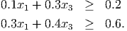
- (10 points) Solve the minimum spanning tree problem on the following graph:

- We could imagine a cutting plane approach to solve the minimum spanning tree
problem, initializing with the constraints that every vertex is adjacent to at least one
edge in the solution, and the total number of edges is one less than the number of
vertices.
- (10 points) Show that such a relaxation for the graph above has a feasible solution with value 36.
- (10 points) Can you find valid constraints that are violated by your solution in part 4(b)i?
- (5 points) Consider now a general graph. Let S denote the set of incidence vectors of spanning trees. Given a feasible solution to a relaxation of the minimum spanning tree with ⁄∈ conv(S), a separation routine can be designed to find a violated valid constraint for conv(S). In the best case, would you expect such a routine to run in polynomial time? Justify your answer.
Solution
- Using a greedy algorithm gives one optimal solution with value 42:

-
- A feasible solution to the relaxation with value 36, where all nonzero xe are equal to
one:

The solution uses 10 edges and has at least one edge incident to each vertex.
There is a better feasible solution to the relaxation: replace edges (d,h) and (d,j) by edges (g,p) and (h,j), which has value 35.
- A spanning tree is acyclic and connected. The feasible solution above is neither.
Violated valid constraints include
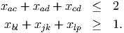 - The optimization problem of finding the minimum spanning tree can be solved in polynomial time. From the polynomial equivalence of separation and optimization, this means the separation problem can also be solved in polynomial time.
- A feasible solution to the relaxation with value 36, where all nonzero xe are equal to
one: